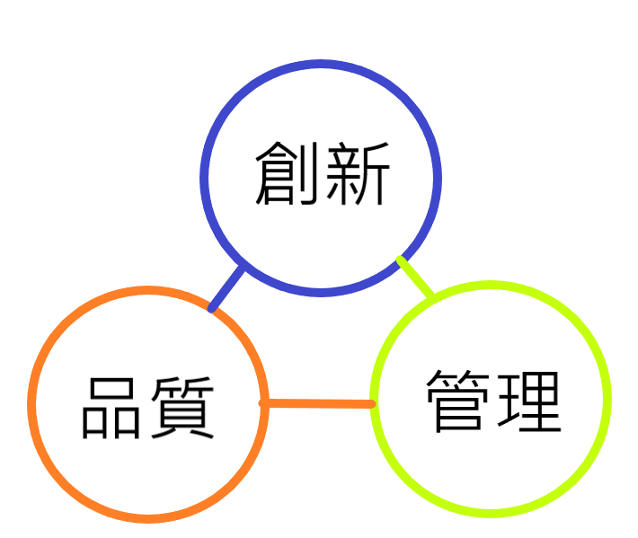
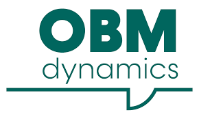
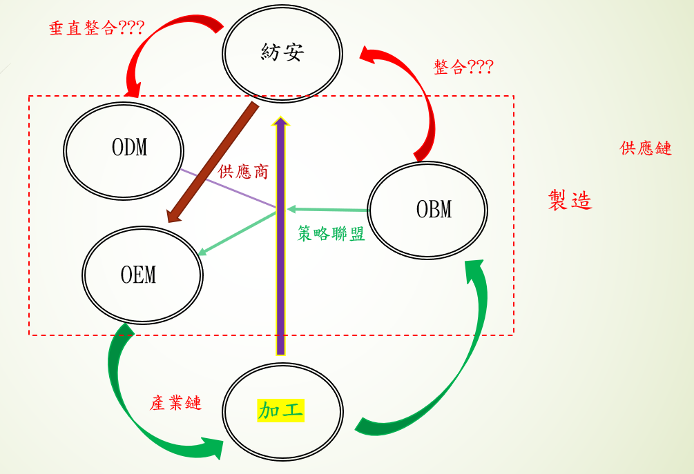

代工市場
代工一詞在產業鏈的上中下游有著不同的解釋，上、中游分別是製造產品，中、下游
大多為產品進行加工。
透過為一些品牌大廠代工，展現自身擁有的特殊技術或機器做出差異化，進而吸引客戶及消費者基本要求。
生產速度要快、技術創新要快、反映客戶需求要快、原物料來源穩定
台灣機能性布料，全球市佔率已達七成，Under Amour、Adidas、The NorthFace、Columbia、Nike Marmot、Victoria's Secret等國際知名品牌背後皆有台灣紡織業的參與，且在2018年世界杯足球賽前16強隊伍中，有75%使用台灣機能布料。
大多為產品進行加工。
代工的三元素:
品質、創新、管理透過為一些品牌大廠代工，展現自身擁有的特殊技術或機器做出差異化，進而吸引客戶及消費者基本要求。
生產速度要快、技術創新要快、反映客戶需求要快、原物料來源穩定
台灣機能性布料，全球市佔率已達七成，Under Amour、Adidas、The NorthFace、Columbia、Nike Marmot、Victoria's Secret等國際知名品牌背後皆有台灣紡織業的參與，且在2018年世界杯足球賽前16強隊伍中，有75%使用台灣機能布料。
客戶群:
大型品牌廠、大型成衣加工廠目前，代工廠以垂直整合生產線為主軸，次是轉型成經營自有品牌，接受客製化訂單，向相關合作工廠下單製作樣板服裝、布料。 客製化市場
為迎合特定族群訂單，而發展出針對特殊需求而發展出的新市場，而在未來可發展出自創品牌，自產自銷
市場優勢:差異化、短交期、個性化、接單生產量大
客製化的點在服裝機能上，再來是服裝設計
客戶群有品牌廠、小型團體、公司及社會機構團體

工廠型態

策略聯盟

從本身製造內容為原點(大多為介於上中游OEM廠或中下游的ODM廠商)，向上尋找固定供應商穩定原料品質 降低中間支出(運輸費、關稅)、減少運輸中損耗率。 向下尋找成衣製造/設計、染整廠(OEM)、品牌廠，也可發展自創品牌。 影響的因素:人力成本、原料、人力資源、交通、關稅等。
儒鴻:上游原料廠主要找台灣本土，而在下游成衣加工廠往東南亞國家設廠，人力多、成本低、交通方便，與中國大陸不同是關稅較低、人力成本更低，產品運輸給客戶各地加工廠比台灣方便。
儒鴻
聚陽
輝特
台南紡織
專做紡紗代工 紡紗種類多、品質在同性質產業較高 客戶有儒鴻、宏遠、南緯、集盛、聯發等具有可加工成成衣的紡織廠，其中，聚陽與其合作較為密切。 大多透過聚陽的客戶或聚陽本身自創品牌以銷售商品。

紡織族群市場
- 材質以天然材質為主，運用複合材質達到一些生活需求
- 特色:設計感不輸成人服裝，品質更是不輸
- 銷售商機上，女生商機比男生大，6:4銷售佔比
- 實體店銷售較網路門市高，網路門市以配件類較多下單
一般功能衣物
一衣多穿市場
影響銀髮族購賣欲的因素
- 色彩
- 文化差異
- 購買成本
- 服裝設計
- 氣候
平價市場
- 平價時尚品牌UNIQLO，不強調流行性，而是標榜「簡單基本款‧多樣色彩選擇‧新材質開發‧價格實惠的好品質」，將基本款服裝視為整體搭配的載台，消費者可自行組搭出自己的風格。
- 百貨專櫃、百貨混和、百貨混和、實體店面、網路商店
- 客戶多為家庭、年輕人(16y以上)、
- MIT品牌：成衣品牌Net，價格平實好搭配，在國內早有口碑。近年更推出Net_W女性專門店，兼顧時尚女性。
高檔市場
- 個性化市場的複合品牌、配合最新流行趨勢、、與化妝品、珠寶等產業互相影響
- 原料選用高檔、華麗、上等的布料
- 百貨專櫃實體、網路商店、實體店面
- 客戶:上班族女性(包含主管級)30%~45~、其次是學生族群25%~30%、第三是家庭主婦10%~15%、其餘職業20%~25%
快時尚
- 快速時尚風，是因為M型社會的來臨，貧富差距兩極化，中產階級快速流逝，消費者均希望以平易的價格擁有時尚。
- 但現在人們發現快時尚背後的問題太嚴重，許多工廠紛紛退出:環境汙染、庫存滯銷、工時過長、危險的工作環境
- 百貨專櫃、實體店面、網路商店
慢時尚
- 快速時尚改寫服裝的定義，從此，衣服對人們的意義從「耐穿」紡織品，演化到可「即穿即丟」的快速消耗品，隨之而來的問題必定是不必要的資源浪費，以及追求快速低價所導致的品管問題。
- 材料使用環保材質，替代原有材料，提倡環保愛地球的概念
- 客戶群有以40歲以上、在意穿著舒適度和設計感的女性居多、
- 網路商店、實體店面
運動市場
- 戶外服裝宜占總款式的15%
- 室內服裝宜占總款式的43%
- 內衣宜占總款式的10%
- 配件宜占總款式的32%
- 百貨專櫃、實體店面、網路商店
電子商務市場
- 全台網路服飾高達3萬多家，要從中殺出血路不容易，幾家闖出名號的網購服飾業者，包括Lativ、OB嚴選、東京著衣及PAZZO等，除Lativ外，其餘均專攻網購女裝服飾
- 網路無國界的特色，甚至能讓熱賣產品的壽命延長到一整年，當我們在北半球賣夏裝的同時，南半球賣的就是冬裝。
- 北部為虛擬通路較興盛，中部其次，再來是南部
- 62%的女性使用手機購物
休閒衣物
- 注重舒適性、平價、耐用性
- 上衣、褲子、外套、其他銷售額比例大約4:3:2:1
運動服裝
- 注重機能，外觀簡單、有型
- 年齡族群介於 21 與 60 歲之間的人口
- 戶外服裝宜占總款式的 23%，較女裝的比重為高
- 室內服裝宜占總款式的 36%，與女裝的比重類似
- 內衣宜占總款式的 4%，較女裝的比重小得多
- 配件宜占總款式的 37%，與女裝的比重類似
時尚衣物
- 年齡市場為20y~35y市場
- 與女性市場的不同於女性消費力較強，價格成本比男生較低
- 男性就會偏向選擇往稀少、差異性質上消費
電子商務市場
- 購買途徑比例為57%，手機為主要途徑，目前持續上升